← Experiment overviewDoes the loss improvement transfer to full samples?
Paired image mean DINO delta (joint − control): -0.02865. Descriptive image-bootstrap 95% interval: [-0.08264, +0.00622], n=8. Statistics.
These images are generated with the official LeFFA pipeline from random noise: 20 DDPM steps, guidance 2.5, 512×384, no final RGB repaint. All three variants use matched per-image seeds. These are separate post-training checks: no full sampling was used to compute a training loss.
Every one of the eight development images is shown. The same automatic detail boxes score every variant. This remains a small development-cohort result, not an independent benchmark.
A lower feature distance is not by itself evidence that a visible defect was fixed; inspect the paired crops below. Raw per-component scores and seeds · Training-step heatmaps and reconstruction results
06742_00
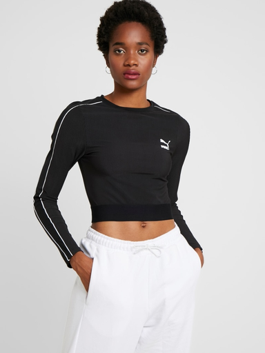
Real targetInitial LeFFA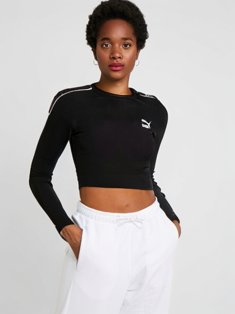
Localization control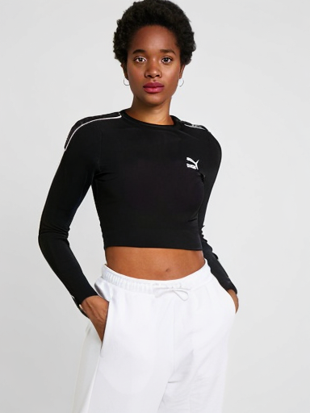
Localization + DINOCollar / neckline: same crop in every image
 Real target cropInitial LeFFA
Real target cropInitial LeFFA
DINO distance 0.2383Localization control
DINO distance 0.1827Localization + DINO
DINO distance 0.1386Left sleeve end: same crop in every image
Real target cropInitial LeFFA
DINO distance 0.3121Localization control
DINO distance 0.2698Localization + DINO
DINO distance 0.2874
Right sleeve end: same crop in every image
Real target cropInitial LeFFA
DINO distance 0.2545Localization control
DINO distance 0.2435Localization + DINO
DINO distance 0.2775
07735_00
 Real targetInitial LeFFA
Real targetInitial LeFFA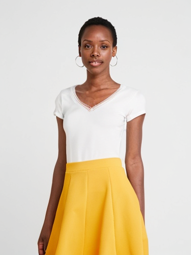
Localization control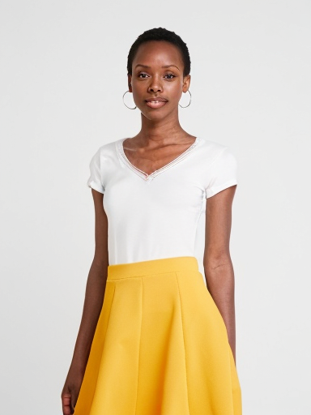
Localization + DINOCollar / neckline: same crop in every image
 Real target crop
Real target crop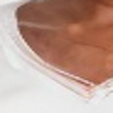
Initial LeFFA
DINO distance 0.3955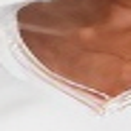
Localization control
DINO distance 0.5482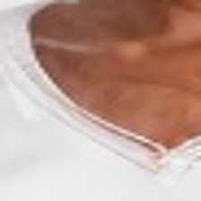
Localization + DINO
DINO distance 0.345205697_00
 Real targetInitial LeFFALocalization control
Real targetInitial LeFFALocalization control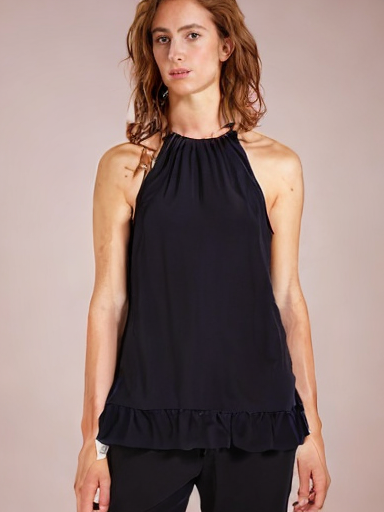
Localization + DINOCollar / neckline: same crop in every image
 Real target crop
Real target crop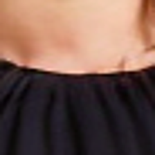
Initial LeFFA
DINO distance 0.1135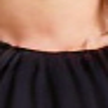
Localization control
DINO distance 0.1212Localization + DINO
DINO distance 0.091610337_00
 Real target
Real target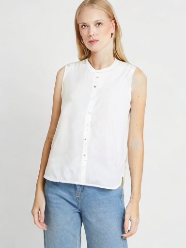
Initial LeFFA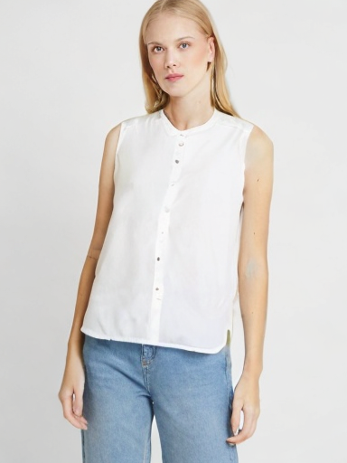
Localization controlLocalization + DINOCollar / neckline: same crop in every image
 Real target cropInitial LeFFA
Real target cropInitial LeFFA
DINO distance 0.1728Localization control
DINO distance 0.1990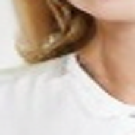
Localization + DINO
DINO distance 0.193803753_00
 Real targetInitial LeFFALocalization controlLocalization + DINO
Real targetInitial LeFFALocalization controlLocalization + DINOCollar / neckline: same crop in every image
 Real target cropInitial LeFFA
Real target cropInitial LeFFA
DINO distance 0.2010Localization control
DINO distance 0.1344Localization + DINO
DINO distance 0.1540Left sleeve end: same crop in every image
 Real target cropInitial LeFFA
Real target cropInitial LeFFA
DINO distance 0.1351Localization control
DINO distance 0.1158Localization + DINO
DINO distance 0.1142Right sleeve end: same crop in every image
 Real target cropInitial LeFFA
Real target cropInitial LeFFA
DINO distance 0.1492Localization control
DINO distance 0.1493Localization + DINO
DINO distance 0.164910215_00
 Real target
Real target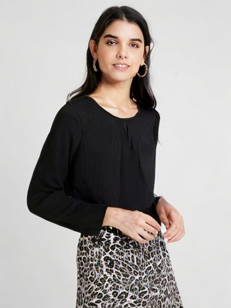
Initial LeFFALocalization controlLocalization + DINOCollar / neckline: same crop in every image
 Real target cropInitial LeFFA
Real target cropInitial LeFFA
DINO distance 0.1521Localization control
DINO distance 0.1509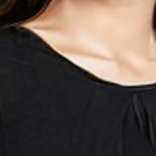
Localization + DINO
DINO distance 0.129702993_00
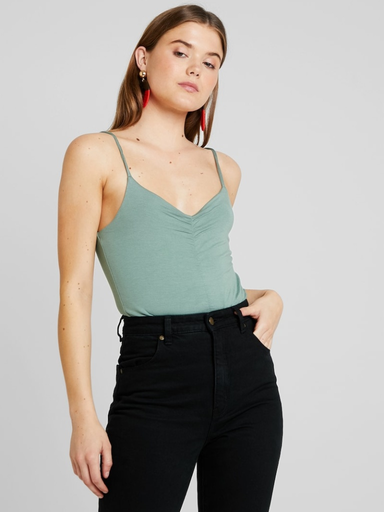
Real targetInitial LeFFA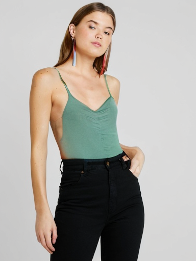
Localization control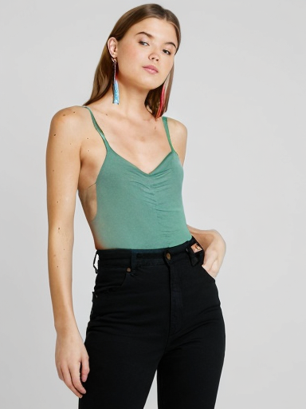
Localization + DINOCollar / neckline: same crop in every image
 Real target crop
Real target crop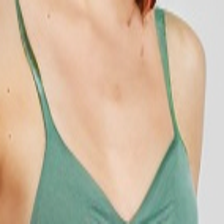
Initial LeFFA
DINO distance 0.1063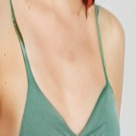
Localization control
DINO distance 0.1142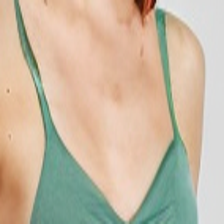
Localization + DINO
DINO distance 0.099108055_00
 Real targetInitial LeFFA
Real targetInitial LeFFA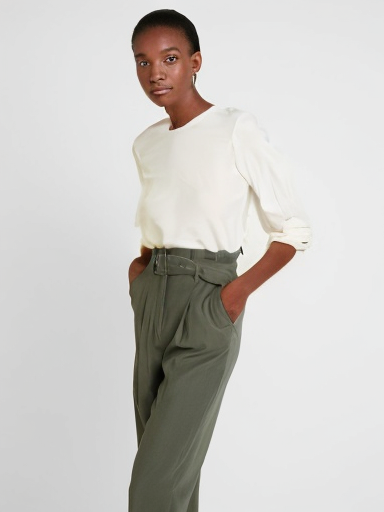
Localization control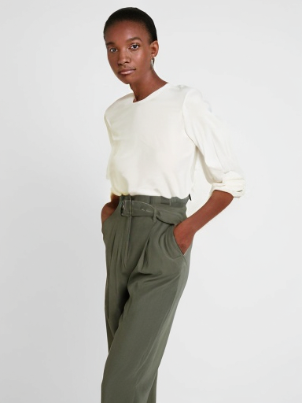
Localization + DINOCollar / neckline: same crop in every image
 Real target cropInitial LeFFA
Real target cropInitial LeFFA
DINO distance 0.1678Localization control
DINO distance 0.1608Localization + DINO
DINO distance 0.1760Left sleeve end: same crop in every image
 Real target crop
Real target crop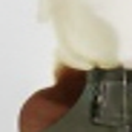
Initial LeFFA
DINO distance 0.6391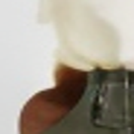
Localization control
DINO distance 0.6513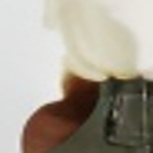
Localization + DINO
DINO distance 0.6755Right sleeve end: same crop in every image
Real target cropInitial LeFFA
DINO distance 0.3368Localization control
DINO distance 0.2904Localization + DINO
DINO distance 0.3450